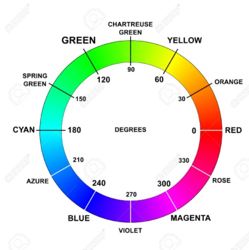

Segmentação de Imagens Parte 2
import cv2
import numpy as np
1. Segmentação de imagens preto e branco
A função cv2.inRange realiza a operação de limiarização. Veja na documentação do OpenCV mais detalhes sobre ela.
Para o caso de imagens preto e branco, a função cv2.inRange recebe como parâmetros a imagem de entrada, o valor mínimo e o valor máximo do intervalo de valores que serão considerados para a limiarização.
O resultado da função é uma imagem binária, onde os pixels que estão dentro do intervalo são brancos e os pixels que estão fora do intervalo são pretos.
Isso pode ser observado no exemplo abaixo.
rintin = cv2.imread('img/RinTinTin.jpg', cv2.IMREAD_GRAYSCALE)
mask = cv2.inRange(rintin, 0, 30)
cv2.imshow("rintin", rintin)
cv2.imshow("mask", mask)
cv2.waitKey()
cv2.destroyAllWindows()
2. Segmentação de imagens coloridas
2.1 Detecção de cores com HSV
Para imagens coloridas, o mais comum é trabalhar no espaço de cores HSV - Hue, Saturation, Value, onde o canal H (matiz) indica o valor da cor dentro dos círculos de cores básicas.
No OpenCV, o canal Hue é representado através da metade do ângulo em graus no círculo de cores. Assim os valores variam de 0 a 180, o que cabe numa representação de 8 bits.

A imagem abaixo mostra claramente como o canal H varia de acordo com a cor, seguindo o círculo de cores.
 Fonte: Wikipedia
IMPORTANTE
-
O espaço de cores HSV é mais adequado para a detecção de cores em imagens, pois ele separa a informação de cor (H) da informação de luminosidade (V) e de saturação (S). Isso permite que a detecção de cores seja mais robusta a variações de iluminação.
-
No circulo acima, lembre-se de dividir o valor 'H' por '2' no momento que estiver determinando seu filtro na OpenCV.
-
SeVsão valores percentuais de 0% até 100%, lembre-se de converter para valores de 0 - 255 no momento que estiver determinando seu filtro na OpenCV.
img_color = cv2.imread("img/hall_box_battery1.jpg")
img_color = cv2.resize(img_color, (0, 0), fx=0.5, fy=0.5) # reduz a imagem para metade do tamanho
img_hsv = cv2.cvtColor(img_color, cv2.COLOR_BGR2HSV)
cv2.imshow("img", img_color)
cv2.imshow("hsv", img_hsv)
cv2.waitKey()
cv2.destroyAllWindows()
Pergunta: O que aconteceu com a imagem em HSV? Por que as cores ficaram "estranhas"?
low = np.array([0, 50, 50])
high = np.array([10, 255, 255])
mask = cv2.inRange(img_hsv, low, high)
selecao = cv2.bitwise_and(img_color, img_color, mask=mask)
cv2.imshow("mask", mask)
cv2.imshow("selecao", selecao)
cv2.waitKey()
cv2.destroyAllWindows()
No exemplo acima, utilizamos novamente a função cv2.inRange() para criar uma máscara que seleciona apenas os pixels que pertencem a caixa vermelha.
Depois, utilizando a operação AND da OpenCV, aplicamos a máscara na imagem original, para que apenas os pixels que pertencem à caixa vermelha sejam exibidos.
Mas como os valores de HSV foram escolhidos?
Para o valor de H, pelo círculo HSV acima, podemos ver que o vermelho está entre 0 e 15, e entre 150 e 180, para essa imagem, escolhemos o intervalo entre 0 e 10.
No caso dos valores de Saturation e `Value``, escolhemos o intervalo entre 50 e 255, pois queremos que a cor seja bem saturada e brilhante, como podemos observar no retângulo HSV acima.
Exercício 1
Na imagem da caixa acima, img/hall_box_battery1.jpg, converta a imagem para HSV e filtre o rodapé branco da parede. Mostre a imagem com apenas o rodapé branco.
Exercício 2
Faça o mesmo que o exercício anterior, mas agora converta a imagem para tons de cinza. Foi mais fácil encontrar os limiares? Por quê?
Resposta
O processo de converter imagens para tons de cinza e então fazer a segmentação é muito util quando queremos remover fundos brancos, por exemplo.
Prática 4.5
Crie um arquivo chamado creepers.py que contenha uma classe chamada ProcessImage com as seguintes especificações:
A classe ProcessImage deve possuir um método chamado run_image que:
- Recebe uma imagem.
- Salva a imagem recebida em uma variável da classe chamada
self.bgr. - Converte a imagem para o espaço de cor HSV, salvando o resultado em um atributo da classe chamado
self.hsv. - Filtra cada uma das cores dos creepers (verde, azul e vermelho) na imagem, salvando os resultados em atributos da classe chamados
self.mask_green,self.mask_blueeself.mask_red. - Soma as máscaras de cor filtradas, salvando o resultado em um atributo da classe chamado
self.mask.
A classe ProcessImage deve possuir um método chamado show_image que exibe a imagem original (self.bgr) e a máscara combinada (self.mask) em janelas separadas.
O arquivo creepers.py deve ter uma função chamada main que:
- Cria um loop infinito que captura imagens da webcam.
- Utiliza o método
run_imagepara processar a imagem capturada. - Chama o método
show_imagepara exibir a imagem processada.